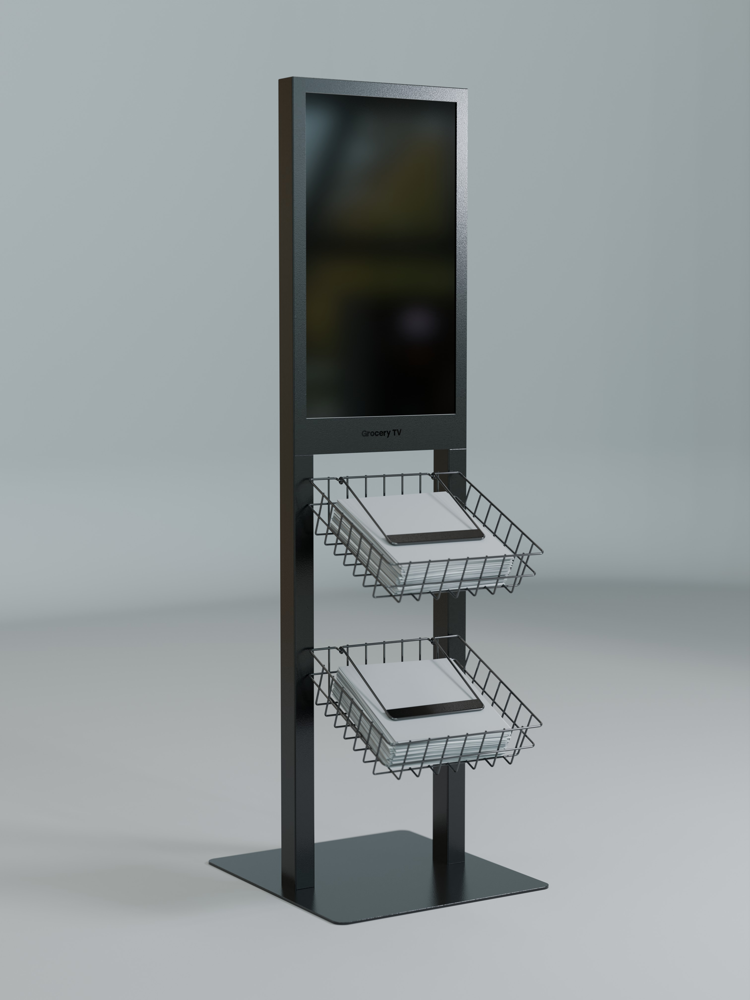
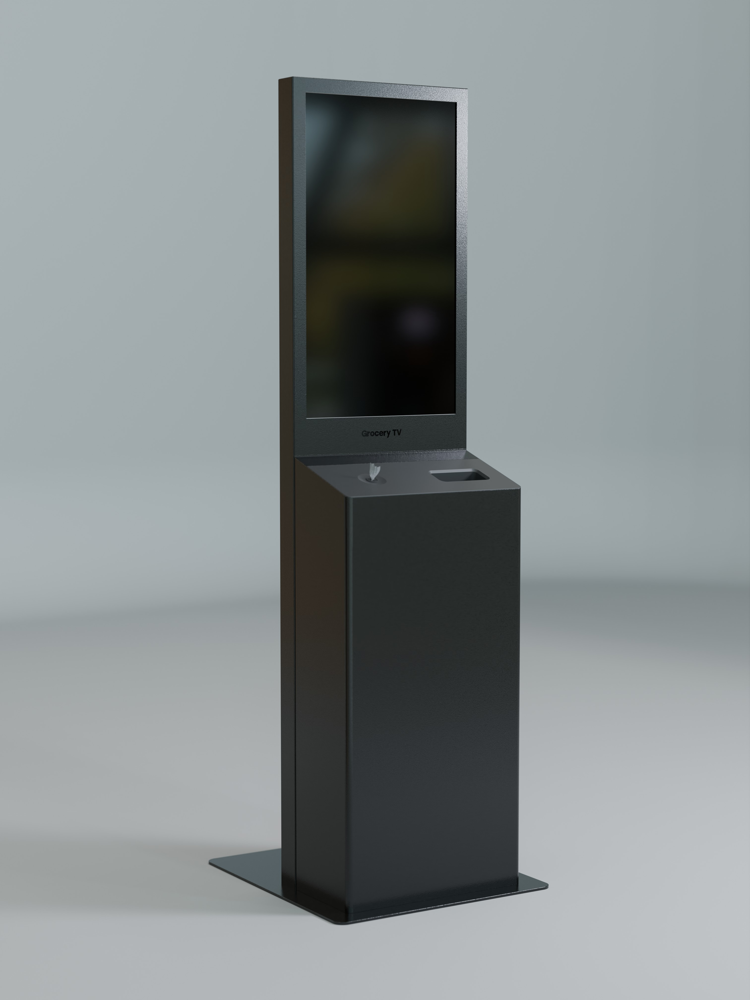
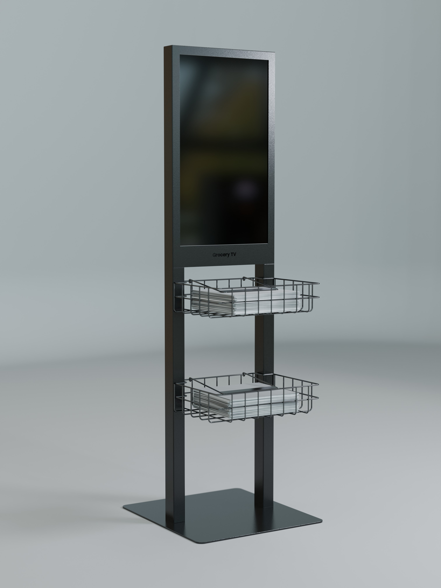

These renders explore lighting refinements, material accuracy, and compositional framing for Grocery TV's hardware. The goal was to push the fidelity of in-house 3D work closer to production photography — studying how light interacts with the device's surfaces across different environments and angles. Each frame tests a different variable: bounce light, reflection falloff, texture grain, and depth of field.